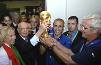

ФУТБОЛ
Футбо́л (англ. football от foot «ступня» + ball «мяч») — командный вид спорта, в котором целью является забить мяч в ворота соперника ногами или другими частями тела (кроме рук) большее количество раз, чем команда соперника. В настоящее время самый популярный и массовый вид спорта в мире.Полное англоязычное название игры, «association football» («футбол по правилам Ассоциации»), было выбрано после создания английской Футбольной ассоциации в 1863 году, чтобы отличать эту игру от других разновидностей футбола, существовавших в то время, например регби-футбол («rugby football», «футбол по правилам Школы Рагби»), где была разрешена игра руками. Со временем длинные названия вариантов игры стали сокращаться в повседневной речи и печати. Сначала в Англии было распространено сокращение «assoc.», затем в 1880-х годах от него образовался термин «соккер» (англ. soccer) путём добавления к сокращению «-soc-» суффикса «-er» на оксфордский манер[en] (по аналогии регби-футбол сокращённо назывался «раггер» (англ. rugger)). В периодике термин «соккер» используется по крайней мере с 1892 года.
В наши дни название «соккер» распространено в ряде англоязычных стран, где исторически продолжают пользоваться популярностью другие разновидности футбола. Например, в Австралии и Новой Зеландии футболом исторически называют австралийский футбол или регбилиг. В Ирландии термин «футбол» относится к гэльскому футболу, поэтому «соккер» употребляется в прессе. В ЮАР игра в большинстве известна как «соккер», что выразилось в названии чемпионата ЮАР, «Премьер соккер лига», и стадиона «Соккер Сити», на котором проходил финал ЧМ-2010. В США и Канаде употребляется термин «соккер», так как футболом называют американский футбол и канадский футбол. В Англии название «соккер» устарело и новые поколения болельщиков теперь считают его пренебрежительным.